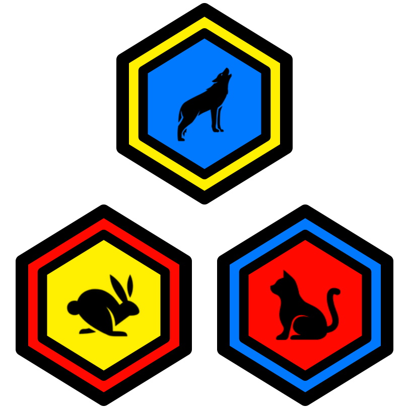

1 Intro Katas
1.1 Code Value 1 Kata
1.2 Code Value 2 Kata
1.3 Code Value 3 Kata
1.4 Hello World Kata
2 Food Katas
2.1 Animal 001 Kata
2.2 Animal 002 Kata
2.3 Animal 003 Kata
2.4 Animal 004 Kata
2.5 Animal 005 Kata
3 Friends Katas
3.1 Animal 006 Kata
3.2 Animal 007 Kata
3.3 Animal 008 Kata
3.4 Animal 009 Kata
3.5 Animal 010 Kata
4 More Friends Katas
4.1 Animal 011 Kata
4.2 Animal 012 Kata
4.3 Animal 013 Kata
4.4 Animal 014 Kata
4.5 Animal 015 Kata
5 Enemies Katas
5.1 Animal 016 Kata
5.2 Animal 017 Kata
5.3 Animal 018 Kata
5.4 Animal 019 Kata
5.5 Animal 020 Kata
6 More Enemies Katas
6.1 Animal 021 Kata
6.2 Animal 022 Kata
6.3 Animal 023 Kata
6.4 Animal 024 Kata
6.5 Animal 025 Kata
7 Game Jam
7.1 Objective
7.2 Partnering Up
7.3 Prompt
7.4 Hints and Help!
7.5 Staff Role During the Jam
7.6 Scoring
7.7 Leading into the Jam